コールバックメソッドがどのタイミングで呼ばれるのかのテスト
前のページにてアクティビティのライフサイクルについて解説しました。その中でアクティビティが色々な状態に変わるたびにonCreateなどのコールバックメソッドが呼ばれるという説明をしましたが、このページでは簡単なサンプルを使って実際にどのような操作をすると、どのメソッドが呼び出されるのかを実験してみます。
ソースコードの修正
Eclipseで新しいプロジェクトを作成すると、デフォルトで次のようなソースコードが作成されます。
package jp.javadrive.hello;
import android.app.Activity;
import android.os.Bundle;
public class HelloActivity extends Activity {
/** Called when the activity is first created. */
@Override
public void onCreate(Bundle savedInstanceState) {
super.onCreate(savedInstanceState);
setContentView(R.layout.main);
}
}
onCreateメソッドだけオーバーライドされていますが、残りの6つのメソッドも同じようにオーバーライドします。修正後のソースは次のようになります。
package jp.javadrive.sample1;
import android.app.Activity;
import android.os.Bundle;
import android.util.Log;
public class Sample1Activity extends Activity {
/** Called when the activity is first created. */
@Override
public void onCreate(Bundle savedInstanceState) {
super.onCreate(savedInstanceState);
Log.v("LifeCycle", "onCreate");
setContentView(R.layout.main);
}
@Override
public void onStart(){
super.onStart();
Log.v("LifeCycle", "onStart");
}
@Override
public void onResume(){
super.onResume();
Log.v("LifeCycle", "onResume");
}
@Override
public void onPause(){
super.onPause();
Log.v("LifeCycle", "onPause");
}
@Override
public void onRestart(){
super.onRestart();
Log.v("LifeCycle", "onRestart");
}
@Override
public void onStop(){
super.onStop();
Log.v("LifeCycle", "onStop");
}
@Override
public void onDestroy(){
super.onDestroy();
Log.v("LifeCycle", "onDestroy");
}
}
各メソッドが呼び出されるとLogクラスを使ってログを書き出すようにしています。(onCreateメソッドにもログ出力用のコードが追加されていますのでご注意下さい)。出力されたログはEclipseのLogCatビューに表示されます。
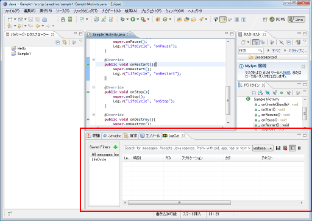
LogCatビューが表示されていなかった場合は、「ウィンドウ」メニューの中の「ビューの表示」メニューをクリックし、さらに「LogCat」メニューをクリックして下さい。
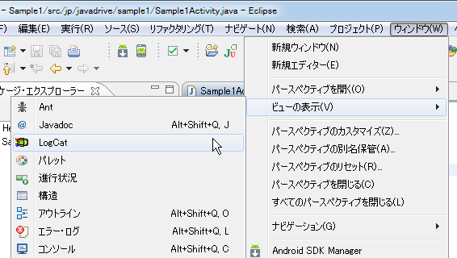
では実行します。
テストの実行
では先程ソースコードを修正したプロジェクトを実行します。まずホーム画面から開始します。
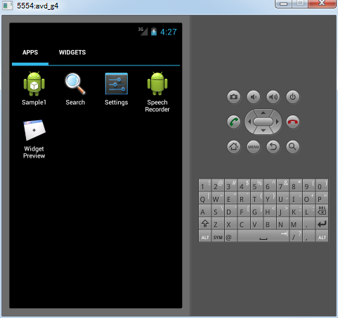
アクティビティの開始
表示されたアイコンをクリックしてアプリを起動します。
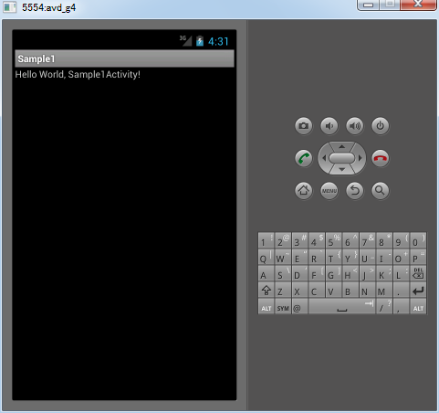
この時、LogCatビューを見ると次のようにログが出力されています。
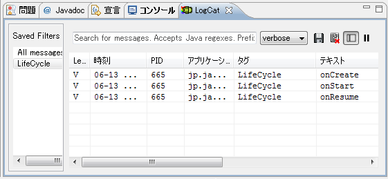
onCreateメソッド、onStartメソッド、onResumeメソッドの順でコールバックメソッドが呼び出されています。これはアクティビティのライフサイクルのページでご説明した下記の部分に該当します。
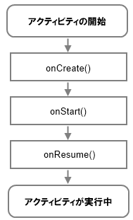
別のアクティビティが開始
では別のアクティビティを開始してみます。エミュレーター上の電話のアイコンをクリックします。
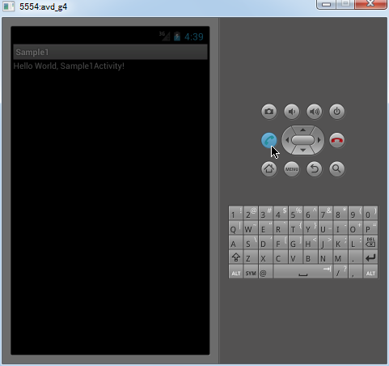
この時、LogCatビューを見ると次のようにログが出力されています。
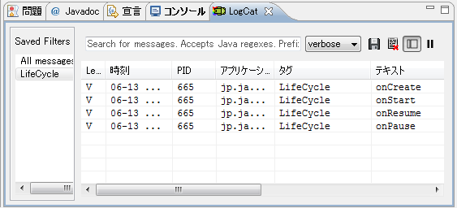
onPauseメソッドが呼び出されています。
そしてエミュレーター上では新しいアクティビティが表示され、元のアクティビティは隠れて見えなくなりました。
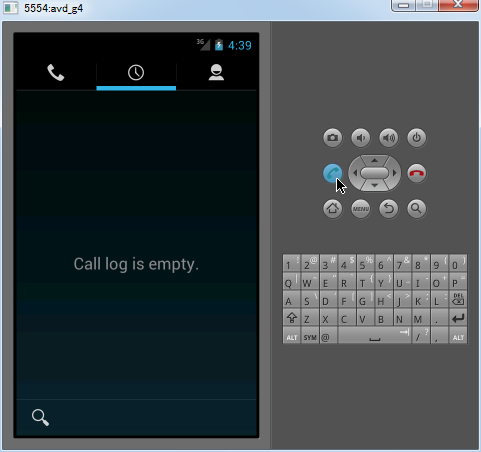
この時、LogCatビューを見ると次のようにログが出力されています。
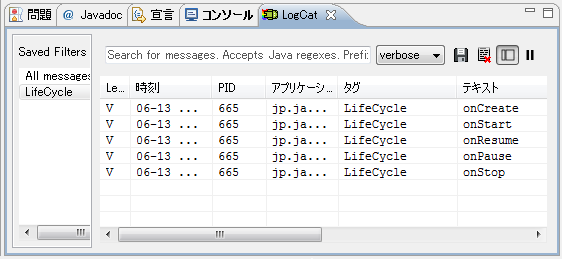
onStopメソッドが呼び出されています。これはアクティビティのライフサイクルのページでご説明した下記の部分に該当します。
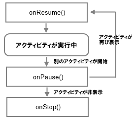
元のアクティビティが再び表示
次にエミュレーター上のBackアイコンをクリックして元のアクティビティを再び表示させてみます。
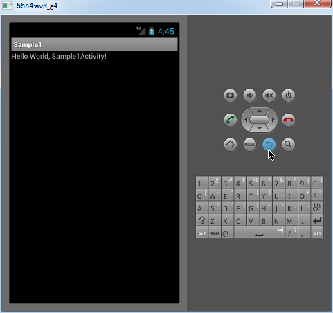
この時、LogCatビューを見ると次のようにログが出力されています。
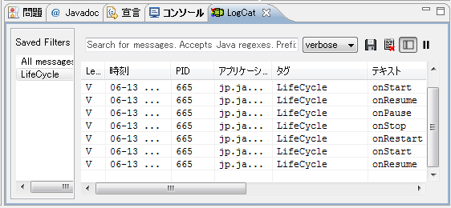
onRestartメソッド、onStartメソッド、onResumeメソッドが順に呼び出されています。これはアクティビティのライフサイクルのページでご説明した下記の部分に該当します。
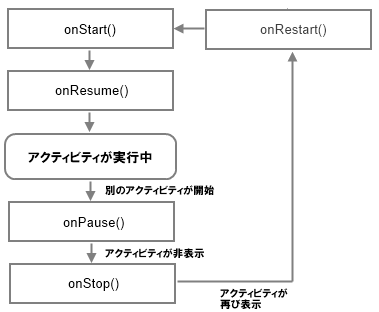
アクティビティの終了
ではもう一度エミュレーター上のBackアイコンをクリックして最初のホーム画面を表示させます。
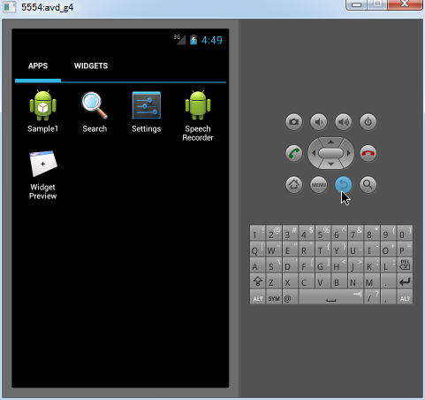
この時、LogCatビューを見ると次のようにログが出力されています。
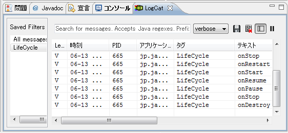
onPauseメソッド、onStopメソッド、onDestroyメソッドが順に呼び出されています。これはアクティビティのライフサイクルのページでご説明した下記の部分に該当します。
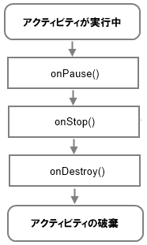
このようにアクティビティのライフサイクルのところで解説したそのままの形でコールバックメソッドが呼び出されていることが確認できました。実際にはメモリが必要になった場合などに今回説明した挙動とは異なる動きをする場合もありますが、基本的には今回ご説明した通りのタイミングでコールバックメソッドが呼び出されますので、必要な処理を行いたいメソッドをオーバーライドして処理を記述するようにして下さい。
( Written by Tatsuo Ikura )

著者 / TATSUO IKURA
初心者～中級者の方を対象としたプログラミング方法や開発環境の構築の解説を行うサイトの運営を行っています。